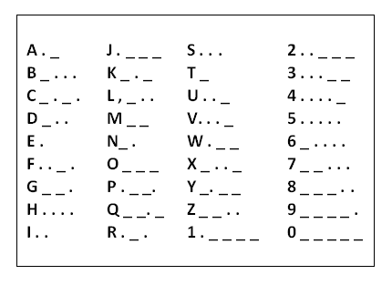

Pemenmu kode/sandi morse bernama samuel FB morse yang berkembangsaan Amerika. Kode morse disampaikan degan menggunakan: peluit, radio, asap, lampu, telegraf, dan arus listrik untuk membedakan titik dan strip digunakan perbandingan 1:3 (1 untuk titik dan 3 untuk strip).
Pada tahun 1837 penggunaanya masih terbatas yang dugunakan dengan sistem telegraf dan baru diterima di seluruh dunia pada tahun 1851.

Contoh sandi morse:
Tanda-tanda baca:
Titik . . . . . .
Koma . _ . _ . _
Titik ganda _ _ _ . . .
Titik koma _ . _ . _ .
Tanda tanya . . _ _ . .
Tanda seru _ . . _ _
Kurung _ . _ _ . _
Apostrophe . _ _ _ _ .
Tanda Mengucap . _ . . _ .
Garis pemisah _. . _ .